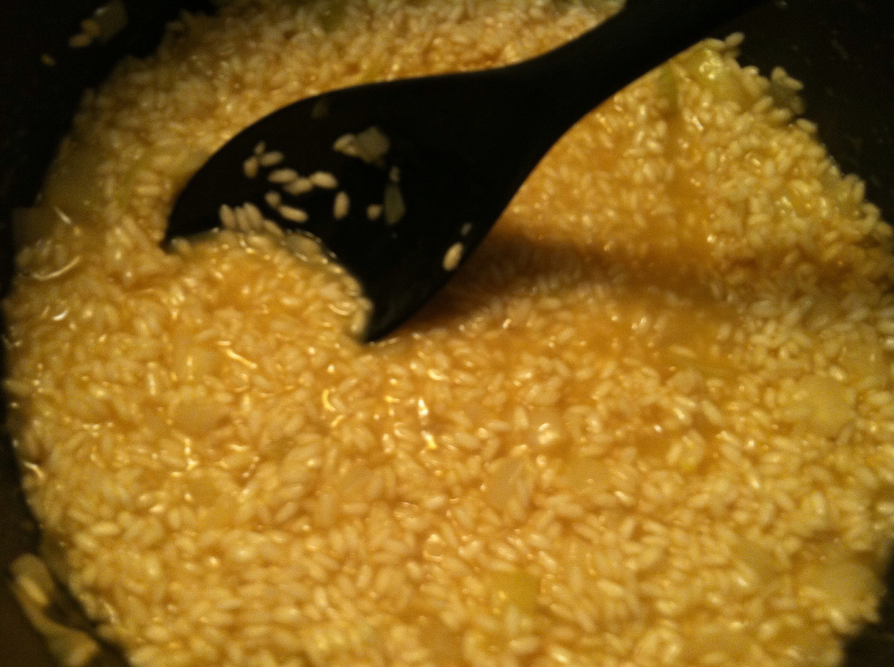

Step 2: Pour in the wine and stir well until evaporated. Add 1/2 cup of the hot stock and 1/2 teaspoon of the salt. Cook, stirring constantly, until all the stock has been absorbed. Continue to add hot stock in small batches- just enough to completely moisten the rice- and cook until each successive batch has been absorbed. Stir constantly and adjust the level of heat so the rice is simmering very gently while adding the stock until the rice mixture is creamy but al dente. This will take from 16 to 20 minutes from the time the wine was added.
